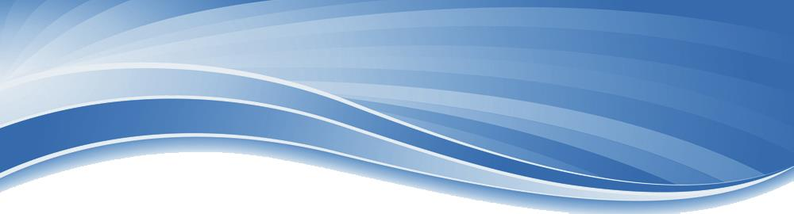
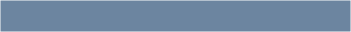
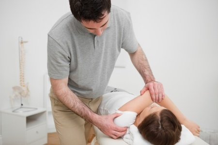
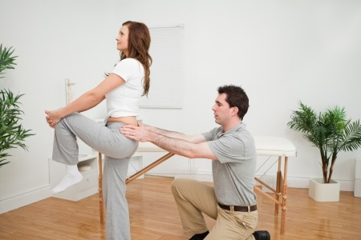
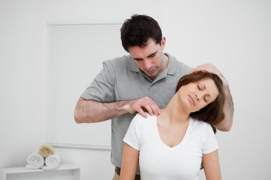
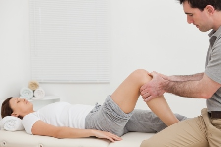
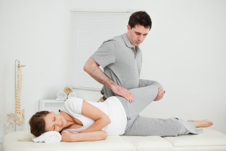

071 - 36 169 25

© Aartsen fysio- en manuele therapie - AGV Privacy Wet Voorwaarden
Algemeen
De fysiotherapeut is de deskundige op het gebied
van het menselijke houdings- en
bewegingssysteem. De fysiotherapeut behandelt
mensen die belemmerd worden in hun houding
en/of bewegen. Nederland kent ruim 16.000
fysiotherapeuten die werkzaam zijn in
ziekenhuizen, revalidatiecentra, verpleeghuizen,
zelfstandige praktijken, gezondheidscentra en
binnen bedrijven.
Visie fysiotherapie Rederijkersplein
Beweging en houding zijn onlosmakelijk
verbonden aan de functie van de gewrichten.
Zonder gewricht is beweging onmogelijk. Met een
beperkt gewricht is dus ook maar beperkt
bewegen mogelijk. Diverse verschillende klachten
(slijmbeursirritatie / peesontsteking / spierscheur /
meniscusletsel / bandletsel etc.) kunnen ontstaan
bij onvoldoende functie van het gewricht.
Beweging en houding vindt bovendien plaats in
meerdere gewrichten tegelijkertijd. Dit betekent
dat onvoldoende bewegen in één gewricht een
aanpassing vereist van minimaal 1 ander gewricht
en diens structuren. De plaats waar de klacht tot
uiting komt kan dus wel eens een heel andere zijn
dan waar de oorzaak van de klacht zich bevindt.
Beweging en houding gebeurd altijd in een situatie
en is hier dus ook niet los van te zien. Klachten en
functiebeperkingen van gewrichten moeten dus
beoordeeld worden in de situatie waarin ze
voorkomen (werk/sport/thuis etc.)
Specialist
De fysiotherapeut is dé specialist op het gebied
van de bewegende totale mens in relatie tot
zijn/haar omgeving
Onderzoek en behandeling
Zonder onderzoek is de juiste behandeling niet
mogelijk. Tijdens de eerste afspraak wordt dan
ook ruim de tijd genomen om via een
vraaggesprek en lichamelijk onderzoek te
achterhalen wat het pijnprobleem is en de
achterliggende oorzaak hiervan. Uiteraard wordt
dit met u besproken en eventuele vragen
beantwoord.
Aandoeningen
Wij begeleiden en behandelen alle voorkomende
aandoeningen van het bewegingssysteem:
Alle pijnklachten van het bewegingssysteem
peesirritaties/ slijmbeursirritaties/ spierscheuren/
hoofdpijnklachten etc.
Mensen die zijn geopereerd
hernia/meniscus/nieuwe heupen etc.
Mensen met neurologische aandoeningen
Parkinson/MS etc.
Mensen met longklachten
emfyseem/hyperventilatie etc.
Mensen met een systeemaandoening
(rheuma/jicht etc.)
Bovendien begeleiden en behandelen wij:
Mensen met kaakklachten
Hiervoor hebben wij een samenwerking met
tandartsen en mondhygiënisten)
Mensen in diverse werksituaties
Sporters (atletiekwereld, voetballers etc.




